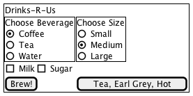
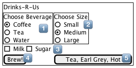
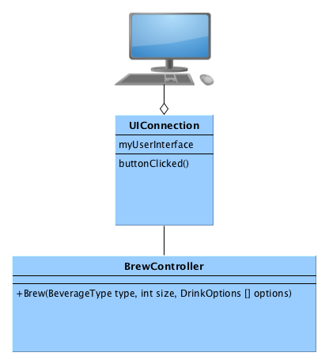
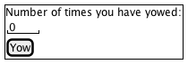
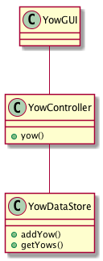

Implementation and Designing the User Interface
Table of Contents
1 About This Sprint
This sprint describes how a user interface can be designed to fit in with the UML use cases.
2 User Stories covered in this Sprint
- As a user interface designer I want to map the software design to the user interface design so that all necessary inputs and outputs are included.
- As a software designer I want to separate the user interface code from the domain specific code so that I can easily integrate with auto-generated user interface code.
- As a software designer I want to separate the user interface code from the domain specific code so that I can easily port the system to other (user interface) platforms.
3 Introduction
This sprint is not about user interface design; this is too important a topic to cover half-assedly at the end of a course on object oriented design. This sprint is about doing a rough sketch of the user interface and connecting this with the user interface, and how to connect this with the rest of your design in a meaningful way.
In older versions of C. Larman, Applying UML and Patterns, 3rd Edition, this was referred to as Real Use Cases. It is not always necessary to do these, nor is this the only way of designing the user interface. The reason I include this as a sprint is that it raises a few interesting points that need to be addressed in the design and the future implementation. Given that the most recent version of C. Larman, Applying UML and Patterns, 3rd Edition does not include Real Use Cases, it may not be that important after all.
More interesting, however, is how you connect your user interface to your design in a clean and re-usable manner, as is discussed below.
3.1 User Interface
The core idea of real use cases is that you make a sketch of the user interface, with all the inputs and buttons and connect to your use cases. For example, consider the user interface in Figure 1. As a side note, the PlantUML code to generate Figure 1 is presented below:
salt
{+
{ Drinks-R-Us }
{+ Choose Beverage
(X) Coffee
() Tea
() Water
} | {+ Choose Size
() Small
(X) Medium
() Large
}
{ [ ] Milk | [ ] Sugar }
[Brew!] | [Tea, Earl Grey, Hot]
}

Figure 1: Draft User Interface
I include this code to show you that you do not have to be extremely accurate or use graphical user interface builders to generate a sketch to continue working with. On the other hand, if you are using something like QT Builder, you may just as well do your sketches there and save yourself the effort of translating them thither at a later stage.
The next step is to annotate the sketch so you can refer to the different elements in text (see Figure 2). We can now revisit the UML Use Case and describe where the information is entered and how it is sent onwards in the system (for clarity I have expressed this in bold text in the use case).

Figure 2: Annotated for Easy Reference
- Use Case
- Order Beverage
- Actors
- Thirsty User
- Description
- A Thirsty User arrives at the Drinks-R-Us machine and orders something to drink. They decide what drink they want, the size of their cup, and whether they want milk or sugar with it.
- Main Course of Events
Actor System 1. A Thirsty User arrives at the DRU machine 2. The system informs about available choices. 3. The Thirsty User orders Coffee in Selector 1 4. The system registers the choice of beverage. 5. The Thirsty User selects a large cup in Selector 2 6. The system registers the cup size. 7. The Thirsty User selects Sugar by pressing “sugar” in Selector 3 8. The system registers that sugar should be added. 9. The Thirsty User indicates that they is done by pressing Button 4 (Brew!) 10. The system brews a large cup of coffee with sugar.
3.2 Connecting User Interface to Design
From a software design standpoint, it is interesting to look at what happens in the system as a response to events in the user interface. On a high-level, it is easy to draw a conceptual image of this, as in Figure 3.

Figure 3: Conceptual overview of how the user interface is connected to the rest of the system.
But how does this work in practice? What part of the system is responsible for owning and creating instances of the user interface? The normal view is that events are sent from the user interface the domain logic. Typically you want to disconnect this one step further, for example to enable automated creation of the classes that deal with user interfaces (belive me, you do not want to go in and touch boilerplate code). This is where the UIConnection class comes into play (and I agree that it is a crappy name for it). This is a class that is clean from any of the ugly user interface code (create a button, position it there, and when this event happens, call that method), and will only get called when an event is generated that involves the actual domain logic. It is the job of this class to make sense of all the options that may be made in the user interface, and text that is entered, and then pass this downwards to the domain logic layer.
A few things are noteworthy here. First of all, there is a desire to keep the BrewController “clean”, with only a small set of functions and a well defined interface (high cohesion). The natural optimisation to do here is thus to only deal with user input once the “Brew” button is clicked. Rather than going back and forth between the logic layer and the user interface for every entry in the user interface – as the use case actually dictates – there is a tendency to present a “dumb” user interface that only tells you when you are finished what you have done wrong. This is also the bare minimum user interface that you can replace with other forms of communication (for example, a web API endpoint such as http://drinksrus.com/brew?beverage=cofee&size=large&sugar=t, or a command line interface brew --size large --sugar coffee). Since you still need to do input sanitation, this is still the minimum viable product that you somehow need to start building anyway.
But what if you really need to implement the use case as specified? What if you also have textboxes and want to do some form of type-ahead in those text boxes? Then you need to add methods to the BrewController for each step in the use case, possibly with a state variable so that you cannot select the size of the cup unless you first have selected a beverage. The type-ahead can be done in two ways. You can either send a call to BrewController after every keypress and get an array of what is likely being typed, or you can send an array to the user interface already from the start with all possible alternatives. The former requires a lower initial bandwidth, whereas the latter has lower requirements on a continuous connection and continuous bandwidth. To the best of my knowledge most web-apps use the former (round-trip to the server for every keypress) these days, especially with the help of websockets.
There are some more forces at play here, and I go through some of them in the accompanying screencast with the help of an example application. Noteworthy are the questions of how you connect the different components with as low coupling as possible, how you tweak the generic design patterns so that you can also piggy-back information on events, and how you sometimes need to work around restrictions in the programming language to make things work.
Taken together all of this can become rather complex to comprehend, as is typically the case when you are trying to integrate different frameworks with each other (consider the user interface as one framework, and your domain functionality as another. You may also have further frameworks that you need to connect with your code). One key obstacle is what is known as the “Hollywood principle”, that many frameworks assume. This means that you, once you’ve configured things at startup, hand over control to the framework who then lends it back to you when an event occurs. Of course, this is more difficult to to if you have two or more frameworks each expecting to be in control of your application.
This may be why most texts on object oriented design are quite happy to teach the principles of good design and responsibility-driven design, but conveniently stops at the level of the BrewController, leaving everything above this level to the poor programmer.
4 TODO Learning Material
4.1 Book Chapters
- C. Larman, Applying UML and Patterns, 3rd Edition, Chapters:
- Mapping Designs to Code
- Test-Driven Development and Refactoring
4.2 TODO Screencasts
- Go through the MVC Dictionary app
4.3 TODO Lectures
4.4 Further Reading
- Falsehoods programmers believe about names An interesting piece about input sanitation
5 Experiential Learning
5.1 Sprint Test Plan
Go through the user stories for this sprint and make sure you have a clear understanding of how to solve each of them.
Revisit and update your risks and contingencies section.
Add and/or revise the following items to your glossary:
- User Interface
- Observer Pattern
- Layered Architecture
- Model-View-Controller Architecture
Make sure you understand what each item is, the notation for them, and how to use them either in isolation or together with the other concepts.
5.2 Self-Study: Small GUI Application
Make a small GUI application in your programming language of choice to test how a user interface is constructed and connected to the “designed” bits of an application.
For example, build a “yow” counter:

With the classes:

Now, figure out:
- how you should connect the YowController to the
Yowbutton without violating any design principles. - how, by using an
observerpattern, you can get the YowGUI to update the yowcounter.
As an additional exercise, which software architecture patterns have I used here? Are there any that are more suitable? How does this change your implementation?
5.3 Update Course Backlog
You do not have a choice; you need to understand the design and your choice of programming platform well enough so that you can implement your system. What challenges can you expect during implementation?
Are there any other questions that you want answered? Add them, along with a brief strategy for how to find an answer.
6 Sprint Acceptance Tests
You are done with this sprint when:
- You have built a small GUI application as self-study.
You may also have
- Updated your Sprint Test Plan
- Updated your Course Backlog